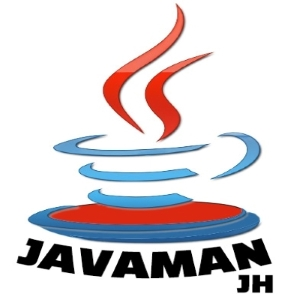

RECENT WORKS
1. ABOUT ME
재혁's NEWS
-

SI에서 프론트 경험이 있는 Node.js 개발자, JH
퍼블리싱이 가능하고, Node.js를 이용한 백엔드 개발, MySQL를 사용한 db관리 등이 가능한 융합적인 인재입니다. 현재보다 10년 뒤 더욱 빛이 날 예정이죠.
(로고는 자바 마크에서 영감을 얻은 저만의 로고입니다!) -
다양한 사람들과 노래로 소통하는 JH
유튜브 노래모음 채널을 통해서 다양한 사람들과 소통하고 있습니다. 채널 활동을 하면서 가장 의미있게 생각했던 순간은 "이 채널 플레이리스트가 제일 좋은 것 같다"라는 말을 들었을 때 였죠!
사람들이 행복해하는 모습을 보는게 너무 좋습니다.
2.HISTORY & CAREERS
지금까지 걸어온 길 (개발 경력)
한 눈에 보는 27년 [1996 ~ 2023]
- 2024년
- 1. --
- 2023년
- 1. SI (주)지아이데이타 퇴사 2022년1월 ~ 2023년5월
- 2. 스파르타코딩클럽 Node.js 백엔드 과정 수료2023년05월 ~ 2022년09월
- 3. 스파르타코딩클럽 커리어톤 (취업지원 프로그램) 2022년10월01일 ~ 2022년 11월
- 4. SI (주)제타럭스시스템 입사 2023년10월30일 ~ ing
- 2022년
- 1. SI (주)지아이데이타 입사 2022년1월 ~ 2023년5월
- 2. 신한은행 통합단말 차세대프로젝트 [전환개발]2022년02월03일 ~ 2022년10월01일
- 2021년
- 1. 21년12월31일 : 웹콘텐츠 UI/UX 디자인 & 프론트엔드 수료이젠 아카데미 강남점
- 2. 21년07월09일 : Java Enterprise Developer 양성과정 수료강남대학교 산학협력단
- 2015년 ~ 2020년
- 2. (주)바이오머테리얼즈 품질관리부서 실습기간20년03월02일 ~ 20년06월18일, 구로디지털단지
- 3. 신생동아리 GG 창단 기획임원18년08월 ~ 19년10월
- 4. 군입대 기간16년05월16일 ~ 18년2월15일, 연천 5사단 k-53계열 차량운전
- 5. 강남대학교 입학 + 과 수석 입학 전액 장학금 수령 15년03월
- 6. 광교고등학교 졸업 15년02월
- 3. 2012년 ~ 2015년
- 광교고등학교 야구스포츠클럽 창단 회장13년~14년02월
- 광교고등학교 입학12년03월02일, 경기도 수원
- 4. 2012년 이전..
- 초당중 / 석성초 졸업경기도 용인
- 5. 1996년 출생
3. 잠깐 쉬어가세요
엠씨더맥스 [MC The Max] 노래모음 4탄
작업한 프로젝트 바로가기
JStory, JStory[국토종주편], ChiolGram, Jboard